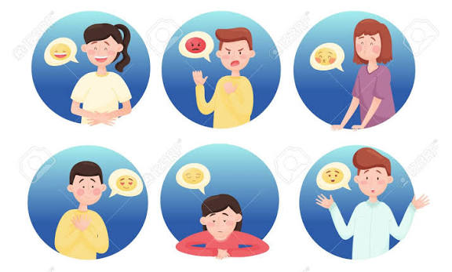

La importancia de reconocer tus sentimientos
Reconocer los sentimientos significa identificar y comprender lo que estás sintiendo, por ejemplo, alegría, tristeza, enojo, miedo, preocupación, frustración o tranquilidad. Es una habilidad importante para cuidar la salud emocional y relacionarnos mejor con otras personas.
¿Por qué es importante reconocerlos?
- Ayuda a conocerte mejor: identificar lo que sientes permite entender qué situaciones te afectan y cuáles te hacen sentir bien
- Permite manejar las emociones: cuando reconoces una emoción, puedes buscar una manera adecuada de expresarla y manejarla en lugar de actuar impulsivamente.
- Mejora las relaciones: expresar cómo te sientes facilita la comunicación con familiares, amigos, compañeros y otras personas.
- Ayuda a tomar mejores decisiiones: comprender tus emociones puede ayudarte a pensar antes de actuar y considerar las consecuencias.
- Reduce la acumulación de emociones: ignorar constantemente lo que sentimos puede generar tensión y malestar. Hablar sobre las emociones puede ayudar a procesarlas.
- Favorece la autoestima: aceptar que todas las emociones forman parte de la experiencia humana ayuda a desarrollar una relación más saludable contigo mismo.
- Permite pedir ayuda: reconocer que estás triste, preocupado o sobrepasado puede ser el primer paso para buscar apoyo.
¿Qué son los sentimientos?
Los sentimientos son las experiencias internas que aparecen como respuesta a lo que vivimos, pensamos o recordamos. Algunos ejemplos son alegría, tristeza, enojo, miedo, vergüenza, culpa, tranquilidad, frustración y amor.
Aunque a veces podemos confundir emociones y sentimientos, están relacionados. Una emoción suele ser una respuesta más inmediata del organismo, mientras que el sentimiento incluye cómo interpretamos y experimentamos esa emoción.
En conclusión
reconocer tus sentimientos es importante porque te permite entenderte, comunicarte mejor, afrontar las dificultades y cuidar tu bienestar emocional. Las emociones no son buenas o malas por sí mismas; son señales que pueden ayudarnos a comprender lo que estamos viviendo.
